Do Witchcraft is a personal project to explore/practice SDFs, bezier curves, animation curves,
procedural geometry, timing, and of course magic. The concept is taken from "The Owl House"
animation series by Dana Terrace and produced by Disney Television Animation.
Each card contains a glyph/symbol on them responsible for performing a spell,
with four base symbols for: light, ice, plant, and fire magic.
These effects are recreated entirely procedurally in Blender using both Shader Nodes and Geometry Nodes.
A handle (empty object) is then mapped to the Z-axis of each card, which is used as a custom timeline for the animation (Z Position = time).
This makes queuing an animation customizable and also allows the user to move the timeline themselves for fun.
In both shader and geometry programs, float curve nodes are used for each individual animation component including
movements, sizing, instancing and more.
Breakdown
As usual with my projects, I've provided a breakdown containing the design choices, method of approach,
and a technical explanation of the key components.
At the very bottom is a new section on the iteration of test renders - as it explains how I approach rendering
and iteration in this step of the project.
Since this isn't a full tutorial, I don't breakdown things like animating the handles responsible for driving
each VFX timeline or a piece on customizing blender settings for a tech art workflow.
However, if you as a reader have any questions about the process or content here then please don't hesitate to ask.
Magic Card SDFs
This first step is to create the cards themselves.
The geometry here is fairly simple - and only requires a plane (which may be subdivided later for deforming the card).
Thus, the first major challenge is to texture the glyph pattern onto each card.
Because each glyph pattern features only simple geometry (line, circle, triangle, quadratic bezier curve, etc), we can generate SDFs mathematically to represent the patterns.
An SDF is a signed distance field, where each position or fragment (in glsl terms) holds a signed value.
The values of every position make up a field, which then can make up a shape. For example a voronoi texture is an SDF representing the distance to the closest points.
SDF's may also be combined with maximum and mimimum operations for intersections and unions.
So from SDFs of circles, lines, (quad) bezier curves, and triangles we'll be able to generate a SDF for the glyph patterns.
For this breakdown, I'll touch on the making of the Ice glyph (second from the left).
Circle SDF
The SDF for a circle is very simple - it is simply the length from the circle's center.
However, we want this SDF to be hollow. This can be done by subtracting the radius of the circle and then taking the absolute value of that.
What happens is at radius R where the SDF value would be equal to R, after the subtraction the value is then 0.
Taking the absolute value, then inverses the inner part of the circle so that its positive.
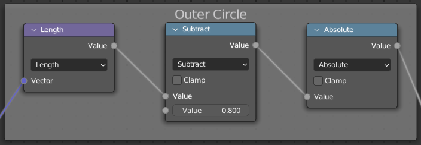
The center here so happens to be at (0,0) - but using the distance operation instead of the length operation can be used to offset the circle.
Rectangle SDF
For the rotated square in the middle, I use a rectangle SDF since it allows for easier customization over 4 line SDFs.
This is also fairly simple and demonstrates the technique for combining SDFs.
For customization, we let the SDF function take in parameters for width and height.
For positioning, lets assume the center is always at (0,0) - the passed in coordinates to this SDF function can be changed to offset its location.
Now similar to the circle, 0 should be the value at each edge. The idea is to do this for each edge - which is simply offsetting the coordinate system 4 ways.
Maximum operations can then be used for unioning.
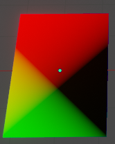
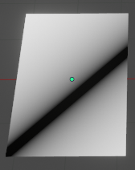
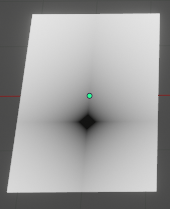
Line SDFs (simple and quadratic bezier)
Some SDFs are significantly more mathmatical.
A line with rounded edges for example has 3 different cases for what the distance may be - and a bezier curve is a bezier curve.
Luckily, such mathematical functions are readily available on the internet.
Just be prepared to transcribe glsl code to blender nodes - which may only be readble in mathmatical notation.
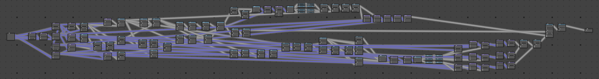
Putting it together
To union SDFs, a minimum operation may be used. A smooth minimum operation can also result in smooth combinations of SDFs.
For organization of the whole SDF into a readable node tree, we have the coordinate system (middle purple line) and distance field (middle grey line)
pass through the entire tree where they are used as inputs and updated from outputs.
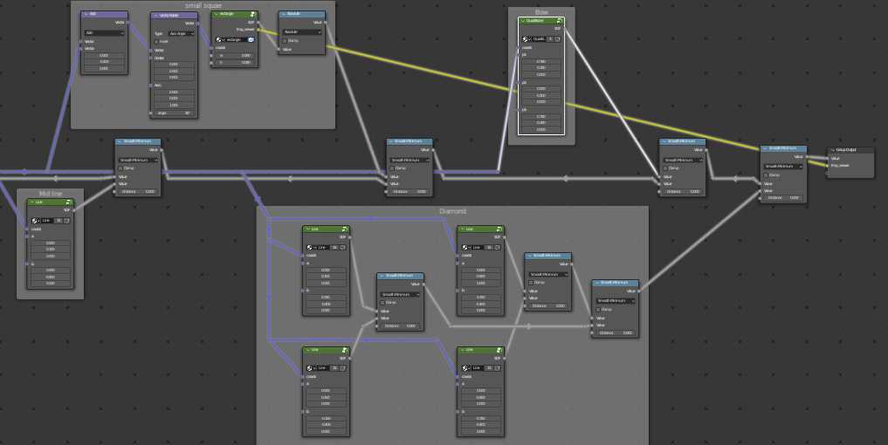
Light Magic
The first magic VFX is the light magic spell, which generates a ball of floating light.
Concept Breakdown
The light spell works by transforming the piece of paper the glyph is written on into a ball of light.
The tranformation of geometry from a plane into a sphere cause the paper to look like its crumbling into a ball- whilst
simultaneously emitting more and more light. The ball then levitates in the air - thus when the paper first starts crumbling
it has already started levitating somewhat.
Below is a simple VFX storyboard. The left-most column is time, the next column is the frame, and then notes are placed on the right.
Shaders (Fragment)
There are two pieces of geometry to shader here- the paper and the ball of light.
Shaders or materials can often be a limited resource in game development; so allocating two materials here may be overkill in some contexts.
This is just something to be aware of in practice, but not constrained here.
The light material is simply an emission material and nothing more (which may be used for many lit objects in a game).
For the paper, there is a bit more work here.
First, on creating the paper texture - the UV map is plugged into a 2D noise texture.
Note that the node here actually uses the 2D setting instead of the default 3D input which is more computationally expensive.
The factor of this texture is then plugged into a color ramp.
This noise is then reused and overlayed (added) onto the glyph SDF mentioned in the earlier section.
A comparison operation is then used as a factor in blending the paper color and ink color.
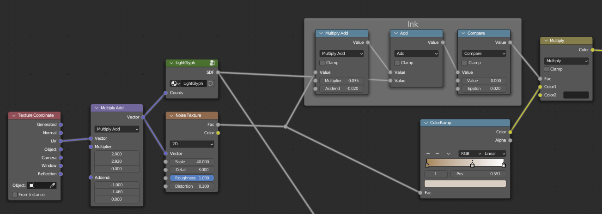
For the emission, we need some concept of time so that the emission can be applied at the correct time.
We also want some easy way of mapping time to values.
For time, we'll create a uniform (attribute in blender)- how this is set will be explained in the geometry section (since it has to be done on the CPU side).
For mapping time to values, we'll construct a setup of two map range nodes and a float curve.
The float curve allows values to be customized (since these are animating the effects we want to be able to ease the effects via curves).
The mapping ranges are then placed around this to map the time range to the float curve input and then remap its outputs correctly.
To organize all this, I created a group node which does no operations but makes hooking the nodes together easier.
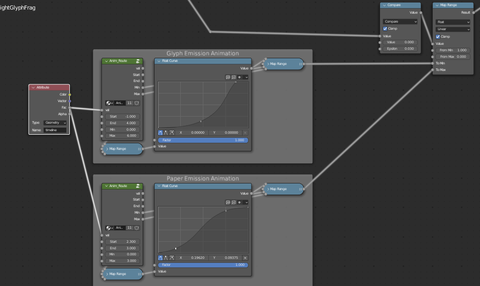
That wraps up the shaders for this effect - the next piece is animating the paper crumbling into a ball.
Geometry
The geometry trees for this project get quite big.
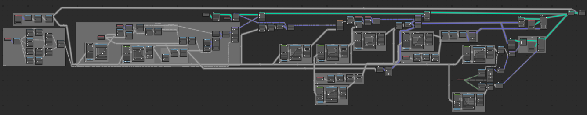
So I've included a list of what is animated (components which change) as a simple breakdown.
The following text then iterates more on each animated value and component.
Curve on edges
Radius of curve
How much of the edge is curved (factor)
Crumble (Noise Height offset)
Amplitude
Roughness (Distortion)
Float
Float Height
Oscillation Amount
Scale of the big sphere
Particles
Scaling
Distance away
Before all else, in the geometry step we need to create the notion of a timeline as mentioned in the previous section.
To do this, we use the Z coordinate of an empty (middle) parented under our light 3D object. This node tree (left) is the leftmost in our geometry tree,
since we also use this value to animate the geometry. After which, it is mapped to an attribute in the modifier settings.
To do this, you must also create an attribute- which ultimately acts as a uniform to the shader (right).
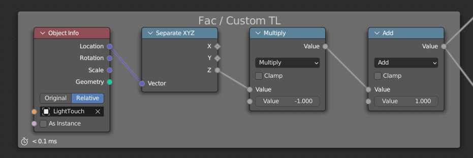
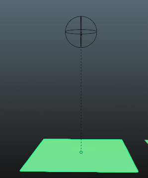
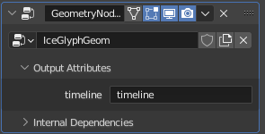
Now onto deformation.
To properly deform the mesh, first we need vertices to represent the amount of detail we're looking for.
The default 4 will not cut it, thus the very first operation is to subdivide the mesh.
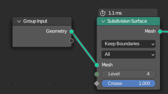
Next we want to crumble the edges of the plane inwards. To start, lets design a 2D test model.
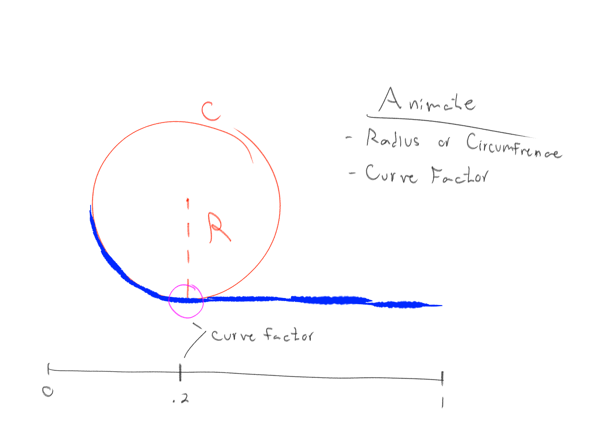
Basically, we'll start by curving the end around some arbitrary circle.
The circle's size and where curving begins is animated, which allows for customization.
Our 3D scenario translates easily to our 2D model - we can consider the X value in the 2D model as the distance from the center of our paper geometry.
The up value then doesn't change.
Next, we must define where the circle (or curvature) begins.
To do this, we constrain the max X value in the 2D model it can be placed.
This is equal to the distance of the corners from the center - which is 1.7 here.
Next we create an animatable parameter which is the factor along this length that the circle is placed.
Using the vertex position, we then want to find how much is curved and how much is flat of its distance from the center.
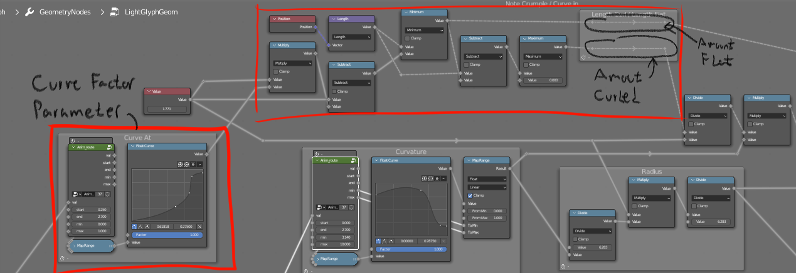
Next, we want to get the radius which is also animatable. For this parameter, the circumfrence may actually make more sense in terms of units and values
since the paper is wrapped around the surface of the circle.
The animation parameter I use here is called 'curvature' and translates to how many radians the max length is wrapped up in.
So if its 2π, that mean wrapping the max length 1.7 will give a complete circle.
The amount its curved by can then be divided by the total length and multiplied by this parameter to get the angle to rotate by.
Rotation here is done by axis angle, where the axis is the in/out axis of our 2D model.
The rotated vector is at (0,0) and the center is at (0, radius). Afterwards, the flat component is added to produce the final position in the 2D model space.
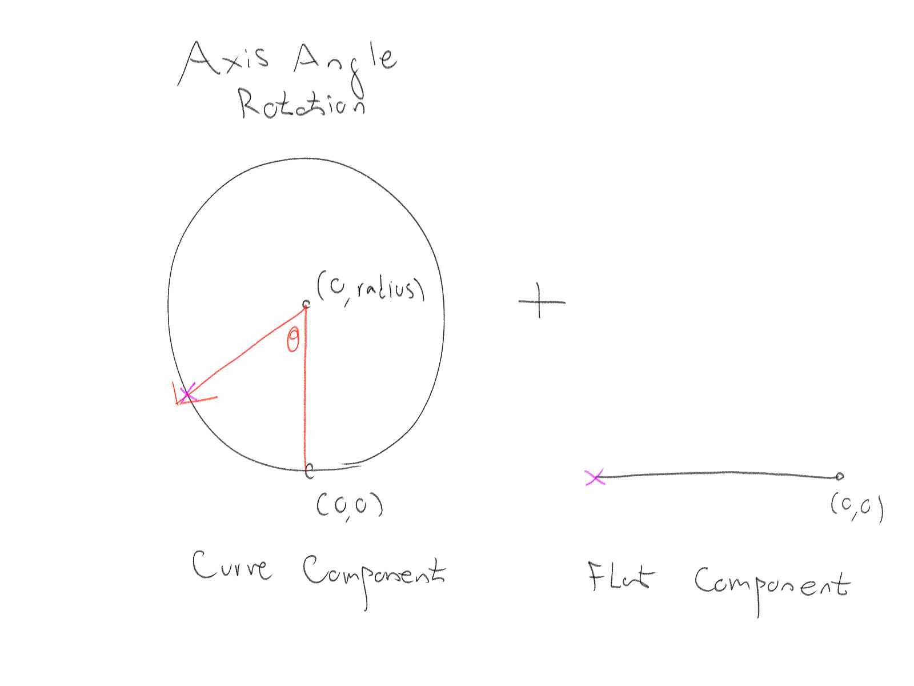
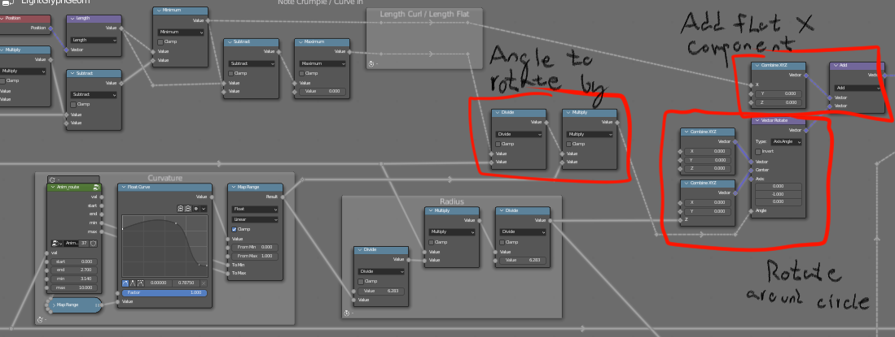
Next, we have to put this in 3D space via another axis angle rotation.
This time the axis is the up vector, the center is (0,0), and the vector rotated in the result of the 2D model above.
The angle is determined via an azimuth angle generated from the oiginal position.
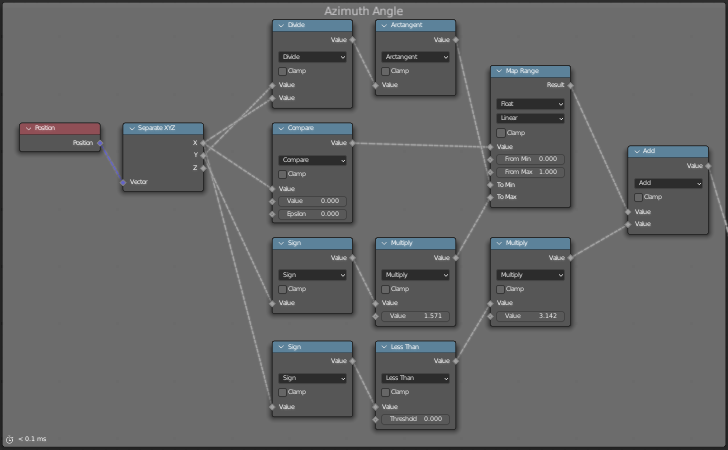
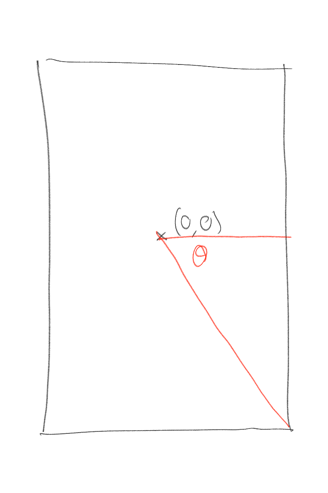
Next, we add some noise to get a more realistic crumble.
For noise, we use the initial position and add the scene time to the Z axis - this lets the noise change over time.
For animation parameters we want to animate: how much noise is applied, and how rough the noise is (change distortion).
You'll also see there is an animation for the floating height in the following screenshot - this is done to condense
setting the position once.
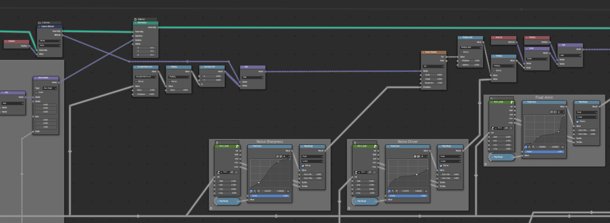
There's also a related animation for how much to apply the oscillation effect.
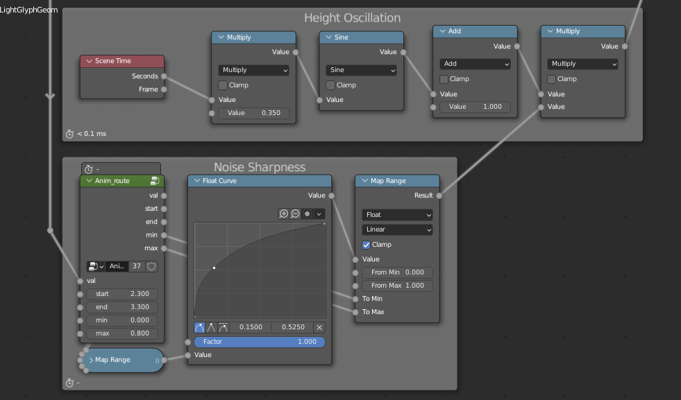
For other geometry, the instance on points geometry node is used to instance exisiting 3D models such as a glowing sphere.
That geometry is then joined with the exisiting plane geometry and used as the final output geometry.
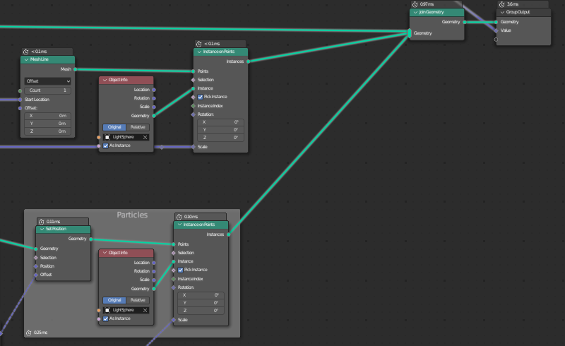
For particles, random values are generated and used for direction, scale multiplier, and a distance multiplier.


 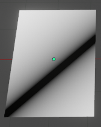
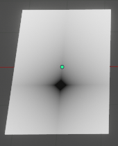
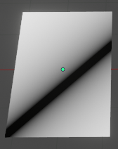
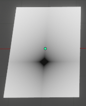